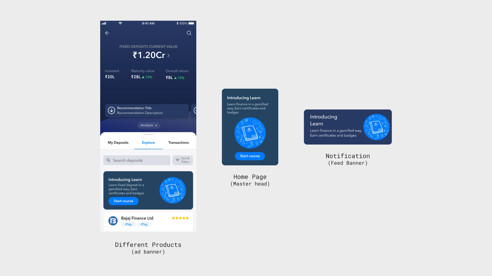

Learn
2023.INDmoney
Designing an engaging and fast learning experience for users to make them understand simple finance topics
Context, people wanted to understand before they invested
INDmoney’s users could buy stocks, mutual funds and a dozen other instruments in the app. Plenty of them didn’t, because they didn’t know what they were buying.
We spoke to five customers, repeat users the company put us in touch with. The pattern was the same each time. They wanted to understand a product before putting money into it, and the way to do that was a twenty to thirty minutes YouTube video or an article. Most of them watched the videos. And all of them felt overwhelmed about it.
For INDmoney the gap was commercial. People don’t invest in what they don’t understand, so the company wanted something that closed it. My brief was to make learning a finance topic fast enough that someone would finish it.
Learn also had to be findable. The three places that made sense the product pages, the home screen, the notification feed.

Sequence, everyone starts at zero
You can only take the lessons in order. Finish one and the next unlocks.
We did it because people arrived knowing wildly different amounts. A course on Fixed Deposits(FD) would get someone who had held an FD for years and someone who had only ever heard the term, and if we let people skip ahead the second person would land in a lesson full of words they’d never seen. Starting everyone at lesson one meant that couldn’t happen.
The cost was obvious in hindsight. If you already knew what an FD was and just wanted the lesson on premature withdrawal penalties, you still had to sit through four others to get there. We never designed for that person. We never really talked about them either.
Format, short enough to finish
People told us the twenty to thirty minute video was the problem. Five lessons at three minutes each adds up to fifteen, which is not far off.
What made it different was that nobody had to do all fifteen in one go. A lesson was five questions and the explanations that came with them. It ended, and you could leave. The video put the whole topic in front of you all in one go. What people told us was that it was too much at once, not that it was too long.
The PM, the content team and I worked backwards from how long someone would actually sit still. Three minutes per lesson, five lessons. Any longer and we were back to the problem we started with.
Lessons, answering is the learning
You don’t read a lesson and then get tested on it. The lesson is the five questions. You learn from the explanation that comes up after you answer.
Pick an option and it tells you straight away whether you got it, and why. It also shows what percentage of people picked each of the four, so a wrong answer usually comes with the fact that most people pick that one too.
How many you got right decides your badge. Two out of five is the lowest you can score and still move on. One or none and you do the lesson again.
You could also redo a lesson you’d already passed, if you wanted a better badge. Going back into a lesson wasn’t only what happened after a fail. It was also how you got from silver to diamond.
Certificate, the part people shared
You get a badge at the end of every lesson. Once all five are done the certificate unlocks, with your name on it and your badges along the bottom. Until then it sits there greyed out, with a note saying which lessons are still left.
It was built to be shared, which served two things at once. Someone who’s just got through a course on mutual funds wants people to see it. INDmoney gets its name onto a post in front of people who have never opened the app.
People still post them on LinkedIn, and they keep appearing in my feed even a year after I left
Results, 5% opened it and most of them finished
5%of monthly active users were opening Learn.
90%of people who started a course finished it
People were overwhelmed with 20–30 minute videos, which is why Learn existed at all. Completion was the number that mattered.
Plenty went unmeasured. How many certificates went out, whether anyone came back for a second course, whether people who finished a course bought the product it was about.